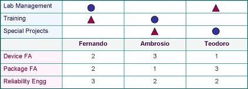

|
Matrix Diagram
The
Matrix Diagram
is an analysis tool that facilitates the systematic analysis of the
strengths of relationships between two or more sets of elements.
It consists of a table whose main rows and columns contain the elements
being inter-related, with the rest of its cells containing symbols or
numbers that denote the strengths of relationship between the elements.
The elements
being inter-related in a matrix diagram may be in the form of
information, concepts, conditions, activities, or other intangible
items, as well as physical things such as people, equipment, tools, and
materials.
The matrix
diagram can be used in almost all types of
decision
making
that involves several options or alternatives, or is affected by several
factors. Examples of these include: 1) equal distribution of major
and minor assignments among members of a given project; 2) selection of
a process, equipment, or material for a given purpose; 3) identifying
the most critical factors affecting a given problem area; 4) matching of
tasks to objectives, etc.
The elements
belonging to the same row or column should have something in common, so
that they comprise a set that
represents
something. For instance, a matrix diagram that relates various
reliability tests to various failure mechanisms might show in its main
row industry-standard reliability tests and on its main column
commonly-encountered failure mechanisms.
The
strength of
relationship
between each reliability test and each failure mechanism may then be
denoted on the cell where they intersect with a symbol or a number (say,
1-3, with 3 denoting the strongest relationship). Table 1 shows a
simplified version of such a matrix diagram. This matrix diagram shows,
for instance, that if one wants to check the reliability of a set of
samples with respect to package cracking and ball lifting, then TCT
should be the reliability test used instead of PCT or HTOL.
Table 1.
A Matrix Diagram Relating Reliability Tests to Failure Mechanisms
| |
TCT |
PCT |
HTOL |
|
Package Cracking |
3 |
2 |
1 |
|
Corrosion |
1 |
3 |
1 |
|
Ball
Lifting |
3 |
2 |
1 |
|
Oxide
Breakdown |
1 |
1 |
3 |
There
are many types of matrices: 1) the L-shaped matrix; 2) the T-shaped
matrix; 3) the Y-shaped matrix; 4) the X-shaped matrix; and 5) the
C-shaped matrix. The two most commonly used matrices, however, are
the L- and T-shaped matrices. The
L-shaped matrix
has a main row and a main column that form an inverted 'L' to
inter-relate
two sets of items directly to each other, or a single set of items to
itself. The matrix shown in Figure 1 is an example of an L-shaped
matrix.
On the other hand, the
T-shaped matrix
has its main column
(or main row) separated in the middle by a single main row (or single
column) that appears in the middle of the matrix. The T-matrix is
used to inter-relate two sets of items (say, sets A and B) to a common third
set of items (say, set C). The items in set A will appear on the
half of the main column above the main row, while those of set B will be
in the half below the main row. The items of the common set C will
appear on the main row.
If the half-columns of sets
A and B in the T-matrix described above are bent to allow inter-relation of
items of set A to those of set B, then a
Y-shaped matrix
results. Placing two
T-shaped matrices back-to-back, however, will result in an
X-shaped matrix,
which allows the inter-relation of four sets of items to each other.
Lastly, the
C-shaped
matrix
is a 3-dimensional matrix that interrelates three sets of elements
simultaneously.
To construct a matrix
diagram, the following
steps are usually taken: 1)
define the
purpose
of the matrix diagram; 2) identify what sets of elements need to be
included to meet the objective of the matrix diagram; 3) assemble the
best team that can inter-relate all the elements of the matrix; 4)
select the matrix format; 5) choose and define the relationship symbols;
and 5) complete the matrix diagram.
As an
example,
suppose that a supervisor wants to document the assigned tasks and
expertise levels of his engineers in matrix format. Since he needs
to interrelate two different sets of information (assignments and
expertise levels) to a third common set (his engineers), then the
T-shaped
matrix
is the best format for his purpose. Also, in this case, he has all
the information he needs to fill up the matrix, so no team is formed for
the task. Had a more complex matrix been required, then the right
people must be called in to form the matrix. Figure 1 shows the
T-matrix for this example.

Figure 1. A T-shaped Matrix
Diagram Defining the Assignments and
Expertise Levels of 3
Engineers
In the first
half of the T-matrix above,
graphical
symbols (a circle and a triangle) were used to interrelate the elements,
with the circle denoting primary responsibility and the triangle
denoting secondary responsibility. The main reason for using
graphical symbols in this portion is to have an immediate visual
indication of the
distribution
of the tasks among the engineers. One glance at the table shows that the
tasks were equally distributed.
In the second
half of the T-matrix,
numbers
were used to denote the expertise levels of the engineers. This is
because there's a need to
'grade'
the various expertise levels of the engineers. Of course, symbols
may also be used for this purpose, but doing so will also require an
assignment of a number to each symbol used. Lastly, using numbers
in a matrix will allow mathematical processing of the data (such as
summing up the values of a row or column), which can be useful in some
cases.
The matrix
diagram is a very versatile tool that can be used in many applications
of the manufacturing industry. Engineers who become
'matrix thinkers'
gain the
ability to conjure up matrix diagrams whenever the need for it arises,
allowing them to explore all available options systematically before
making a major decision.
See Also:
Scatter Diagram; Ishikawa Diagram
HOME
Copyright
©
2004-2005
EESemi.com.
All Rights Reserved.
|